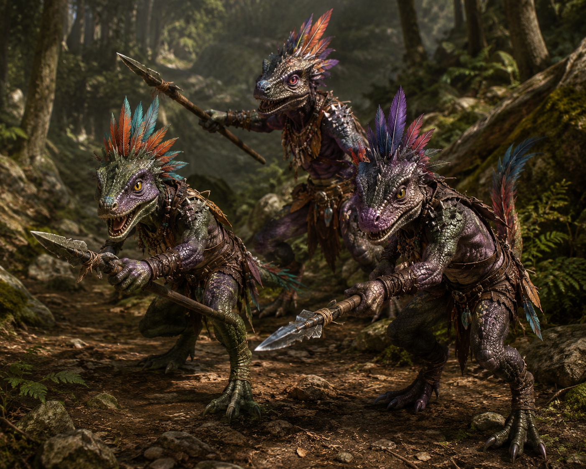
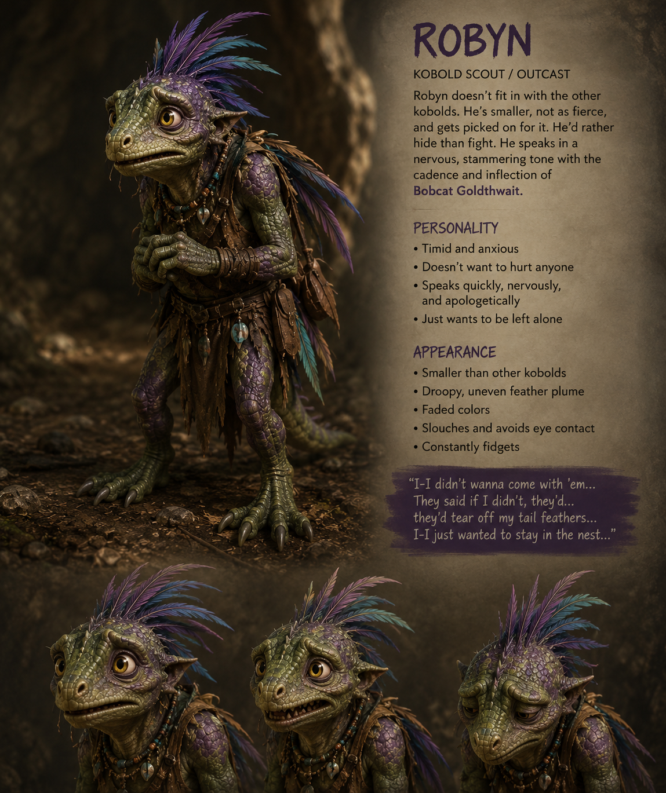
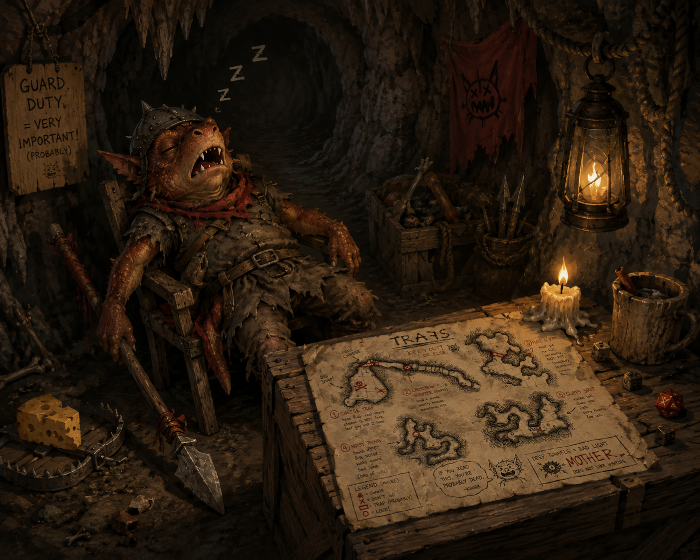
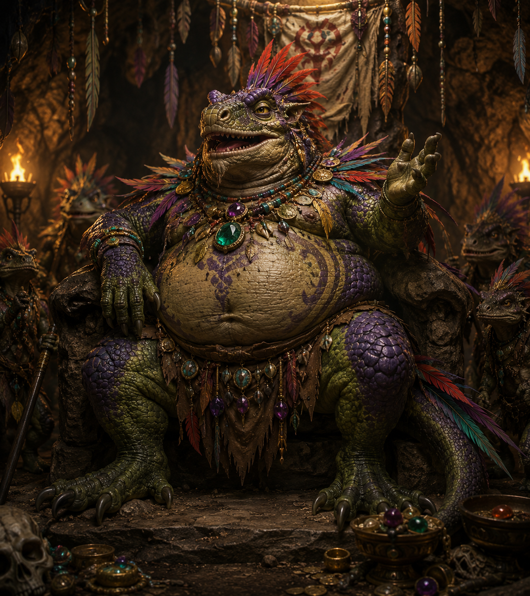
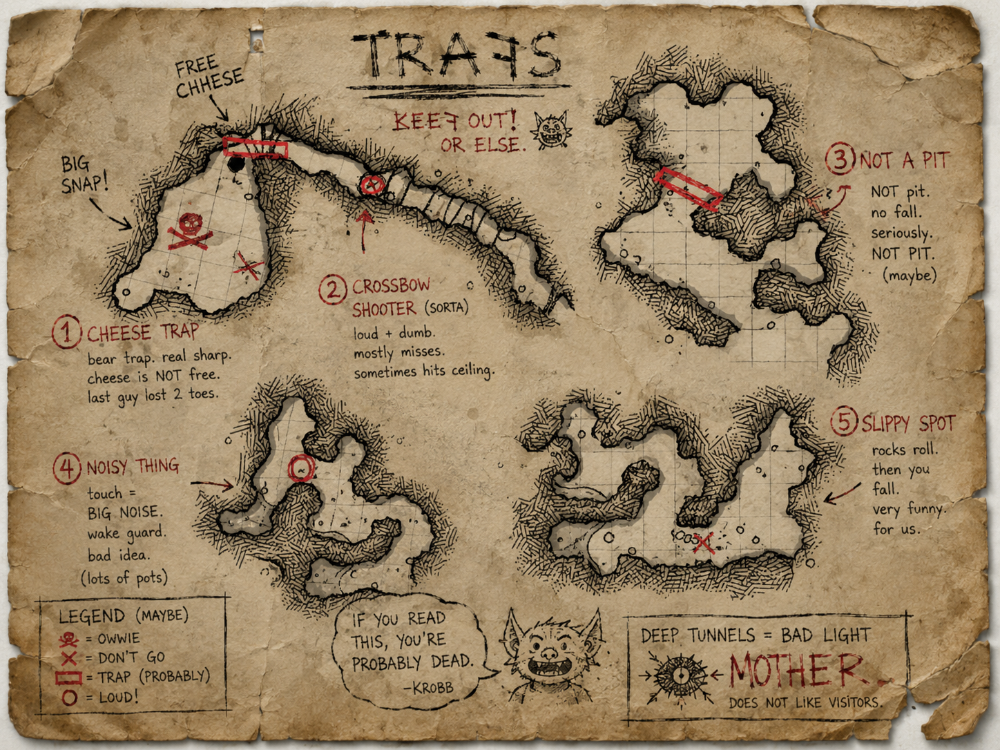
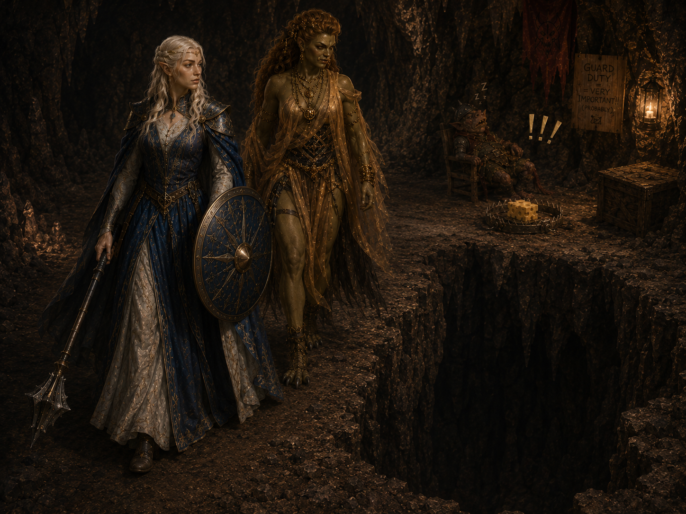

Investigation Arc · Kobold Tunnels · Eric Huwithakay · The Crate
← Return to Hollowgate GM ReferenceSurface Problem
Start grounded: hungry townsfolk, frustrated merchants, missing wagons. Then slowly shift into "something about this is wrong."
This is the party's first "larger world" mystery. It should feel solvable at first — then reveal it never was just a kobold problem.
What Actually Happened
A mysterious human agent hired kobolds to ambush supply convoys. The kobolds were not interested in the food — they were instructed to retrieve a specific crate from one convoy.
Kobolds don't normally do this. They scavenge, steal livestock, raid isolated farms. Coordinated convoy ambushes strongly suggest outside influence — which is exactly what should bother the mayor and Eric.
The Stable — Opening Scene
The party witnesses a loud argument between a furious convoy driver and the stablemaster. The argument has clearly happened several times already. He looks exhausted: muddy boots, unshaven, bloodshot eyes, clothes not cleaned in days.
The convoy animals survived and eventually wandered back. The wagons and cargo did not.
The Convoy Driver — Recurring NPC
The Mayor
For stopping the attacks, recovering the latest convoy, and ensuring the roads become safe again.
The Tavern
Meals increasingly limited: potatoes, salted vegetables, watered ale, stale bread. No fresh meat. No luxury ingredients. The tavern keeper allows the convoy driver to stay for free.
Wagon Investigation
When the party finds the abandoned wagons, the supplies remain: sacks of potatoes, barrels of ale, grain, preserved food. This should feel wrong. Bandits steal valuables. Hungry kobolds should steal food. They didn't. They wanted something else.

Small reptilian humanoids with avian traits suggesting ancient evolutionary divergence rather than draconic ancestry. 3½–4½ feet tall, upright and alert, with disproportionately powerful hind legs built for sudden bursts of speed, climbing, and leaping.
These kobolds move differently than goblins. They bob slightly while standing, make rapid head movements, chirp and hiss while speaking, leap sideways unnaturally fast.
Higher-status kobolds exaggerate their plumes heavily with dyed feathers, beads, bits of metal, fake jewelry, and scavenged decorations. The chieftain's "royal regalia" is essentially molted feathers, broken necklaces, polished trash, and fake gemstones — arranged with absolute sincerity.
These kobolds are not naturally organized raiders. Normally they scavenge, trap small game, steal livestock, raid isolated farms, and avoid heavily armed targets.
The fact they coordinated convoy ambushes strongly suggests outside influence. Which is exactly what should bother the mayor and Eric.
Trail Evidence
First Kobold Encounter
Should feel chaotic, scrappy, more desperate than disciplined. This is not an elite raiding party — it's frightened scouts who were told to watch the road.
Investigation Checks — Trail
| DC | What They Find | Type |
|---|---|---|
| DC 10 | Wagon Ruts Into Trees | Survival |
| DC 12 | Kobold Prints — Formation, Not Chaos | Survival |
| DC 14 | Territorial Markers — Established, Not New | Investigation |
| DC 15 | The Crate Was Moved Separately | Investigation |



The Guard Post
A single kobold guard sits slumped at a crude wooden post just inside the cavern entrance. He is not pretending. He is not a trick. He is asleep — deeply, completely, with the total commitment of someone who takes guard duty very seriously in theory and not at all in practice.
On the desk in front of him: his map, face-up. On his belt: two stoppered vials. Immediately visible from the entrance: a large block of cheese sitting next to an open bear trap. Also immediately visible, directly behind his desk: a pit in the floor.
Loot — On Krobb's Person
The Trap Map

Hand-drawn on the back of a food manifest in charcoal. Misspelled throughout. Annotated with strong opinions about each trap's quality. At the bottom in larger letters: IF YOU READ THIS, YOU'RE PROBABLY DEAD. –KROBB
A small kobold face is drawn in the corner. It is grinning.
| # | Trap | Notes |
|---|---|---|
| 1 | Cheese Trap | Bear trap. Cheese bait. |
| 2 | Crossbow Shooter (Sorta) | Loud. Dumb. Mostly misses. |
| 3 | Not A Pit | It is a pit. |
| 4 | Noisy Thing | Touch = BIG NOISE. |
| 5 | Slippy Spot | Rocks roll. Then you fall. |

Navigating the Traps
If the party has Krobb's trap map, they can reference it against what they encounter — each trap roughly matches the map's crude diagrams. Players who engage with the map should feel rewarded: advantage on Perception checks to spot traps, and they know what type of hazard to expect before they see it.
If Krobb was questioned and cooperative, he'll have told them which side of the tunnel to hug for the Slippy Spot and that the Noisy Thing strings are at chest height — worth communicating.
The Dark Corridor
The tunnel here changes character. The crude torchlight of the entry gives way to near-darkness — a deliberate choice. The ceiling drops lower. The air is colder, damper, heavier. Sounds carry differently: the distant drip of water, something settling in the rock, the faint murmur of voices ahead.
This section is meant to feel like something is being kept here. Not imprisoned. Contained.
The Two Guards
Two kobolds stand (one is actually sitting) near a crude barricade of stacked stones and old timber. They are talking. Not quietly. They have been here long enough to be bored, and bored kobolds are chatty kobolds. They are not watching the corridor behind them.
They are not the chieftain's best. These are the kobolds who lost the assignment lottery.
| DC | What They Learn | Type |
|---|---|---|
| DC 10 | Two voices, bored, not alert | Perception |
| DC 13 | Positioning — neither watching the approach | Perception |
The Jail Area
Beyond the guards, a crude jail: rough stone walls, a few rusted bars wedged into the rock, a floor of loose gravel. It looks unused. No prisoners visible. No recent signs of occupation.
The guards don't go in. They don't look at the far end.
The far wall of the jail is dark — truly dark, beyond what torchlight reaches. A deliberate arrangement of rocks and rubble creates a visual barrier, not a physical one. Behind it: the chieftain's pet. The cavehopper is being kept here between showings.
This is why the guards don't look at it too long. This is why there are no keys — the rocks are the containment. This is why neither guard would rather die than run.
The cavehopper, if freed here, does not immediately attack the party — provided no one moves suddenly. It investigates them with its nose. It cocks its head. It makes a small chirping sound.
If it remains calm, it may trail the party deeper into the tunnels. It will attack any kobold it encounters. It will also attack the party the moment someone triggers it.
Guard Behavior — Flee Over Fight
These guards are not brave. They are not loyal. When surprised or threatened, their overwhelming instinct is to run — not toward the exit, but deeper into the tunnels, toward the chieftain's den. This is not tactical. This is kobold panic.
If one flees, the other almost certainly follows. They will shout the whole way.
Tunnel Atmosphere
The Caged Creature
The party passes a guarded section where the guards seem more concerned with keeping something in than keeping intruders out. Behind bars and around a bend: scratching, soft growling, tiny squeaking noises. The creature is not fully visible.
If released early, it may later aid the party — or at minimum attack kobolds indiscriminately.
The Den
The Pet — The Reveal
Rather than threatening the party, the chieftain proudly presents his pet. He is showing off. This is his prize possession — his greatest treasure. He wants the party to admire it.
Initially: bunny-like, twitchy, enormous black eyes. Almost unbearably cute. The chieftain beams. His court murmurs approvingly.
The cavehopper investigates the party with its nose. It cocks its head. It makes a small chirping sound.
Any sudden movement — standing up, drawing a weapon, stepping forward, reaching out to touch it — causes the cavehopper to snap. Jaws split too wide. Posture drops into a predatory crouch. Eyes go flat and predatory. It moves with violent, unnatural speed.
The chieftain does not intervene. He watches with the expression of someone watching their prize horse perform.
After the fight, the chieftain is annoyed — not at the party, but at the situation. He wanted a demonstration, not a mess. He waves them out impatiently through a back tunnel.
The kobolds chase them with rocks and spears more out of embarrassment than genuine pursuit. They are herding, not hunting.
The Crate
The kobolds are disappointed. The crate contains only an old book, wrapped carefully — non-metal, non-shiny. The chieftain finds this deeply insulting. He considers the human employer a fraud.
The book itself is tied to the deeper corruption storyline. Its significance is not immediately obvious — it looks old, carefully preserved, and not obviously valuable.
Escaping the Caverns
After the pet fight, the chieftain forces the party out through a different tunnel route. Soon: kobolds begin chasing them, shouting, throwing rocks and spears. The exit is disorienting and the kobolds know the tunnels far better than the party.
Eric's Body — The Transition Moment
While escaping the caverns, the party discovers Eric Huwithakay's corpse. This should land heavily. He was investigating this, getting close to answers, and likely silenced.
His satchel is on him — containing the partial tunnel map, the final note about kobolds, and the bronze signet stamp.
Eric Huwithakay
Eric was investigating unusual tariffs, altered manifests, missing cargo, and suspicious trade movement. The convoy theft intersects directly with that investigation. His charcoal map, his final note, and his body in the tunnels are all found here.
See: Hollowgate GM Reference → Eric Huwithakay Investigation
The Carnival Arc
The same tunnels that diverted the trade convoys are connected to the Moonlit Mirage Carnival's missing supply convoys. Recovering the carnival's convoy and recovering the trade convoy may be the same objective.
The 400 gp reward from Jeffrey and the mayor's reward may both apply to the same investigation.
The Dying Human & Elkenquay
The dying human's Elkenquay markings connect this arc to the regional political conspiracy driving tensions between Elkenquay and Fastingbreak. His documents reference "adjusted taxation" and "diverted cargo" — the same patterns Eric was tracking.
Whether the convoy diversion and the artifact modification were carried out by the same actor is an open question that points outward from Hollowgate.
Vanya was sent to silence "the current gate scribe" — the person who replaced Eric and began noticing similar irregularities. The party resolving the convoy arc may bring them into direct conflict or collision with Vanya's timeline.